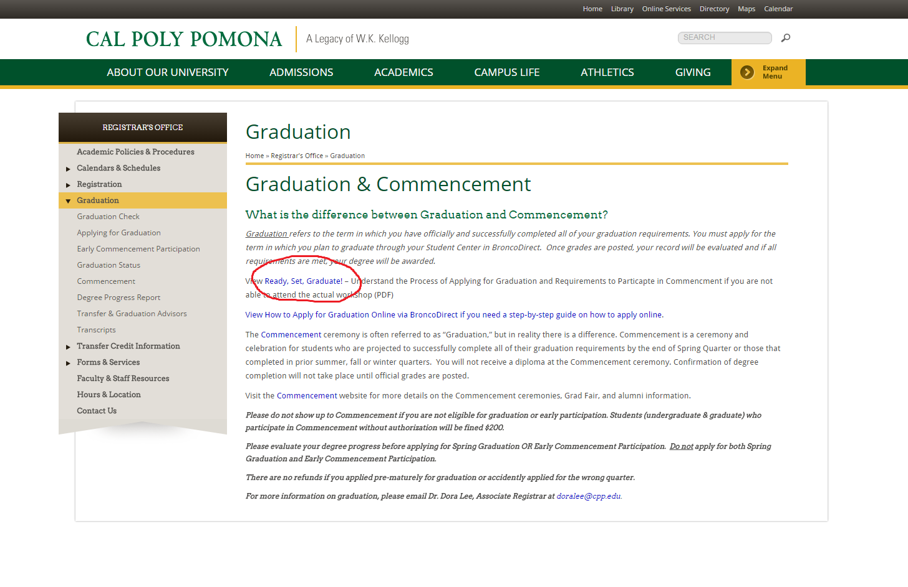
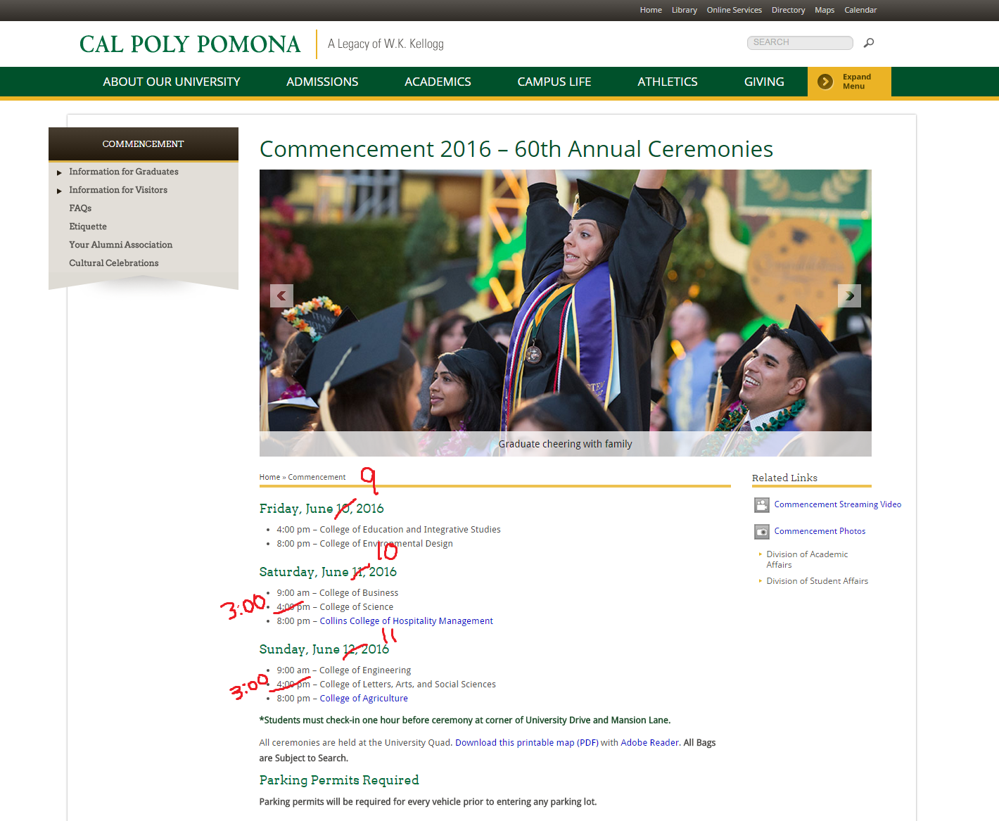

This webpage serves as a summary of the November 10th "Ready, Set, Graduate" workshop
*The Registrar's Commencement website is still under construction
Some dates and information on the Registrar's website haven't been updated yet
 | Quarter when graduation is expected | Graduation application period: | Apply for Graduation to receive Graduation Senior Registration Appointment by: | Deficiencies must be cleared by: |
|---|---|---|---|
| Fall 2016 | March 28 - October 21,2016 | May 12, 2016 Schedule Adjustment: August 18, 2016 | January 6, 2017 |
| Winter 2017 | September 22, 2016 - January 27, 2017 | October 21, 2016 | April 12, 2017 |
| Spring 2017 | January 3, 2017 - April 14, 2017 (apply for graduation by April 14 to have your name printed in the Commencement Program | January 27, 2017 | July 12, 2017 |
| Summer 2017 | March 27 - August 10, 2017 | April 14, 2017 | September 27, 2017 |
| Spring 2017 Online Graduation Application Period Your name will be printed in the Commencement Program if you apply by the deadline | Commencement Confirmation Spring Graduation Applicants will be notified on their eligibility to participate in Commencement via |
|---|---|
| January 3 - April 14, 2017 | May 2, 2017 |
| Spring 2017 Early Commencement Participation Application Period Your name will be printed in the Commencement Program if you apply by the deadline and are eligible | Early Commencement Confirmation Early Commencement Participation Applicants will be notified on eligibility to participate in Commencement via |
|---|---|
| February 1 - April 14, 2017 | May 2, 2017 |